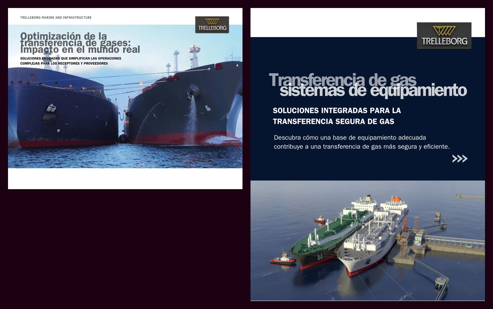
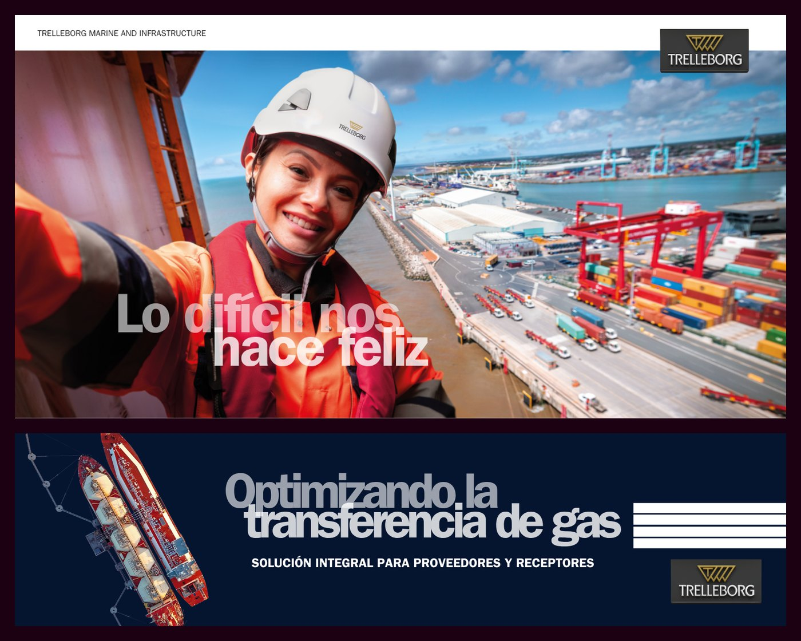
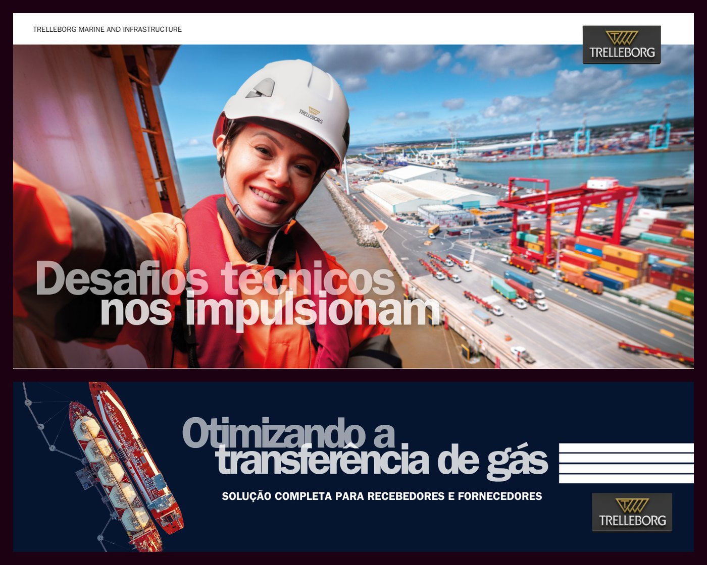

A go-to-market programme for Latin America
Brazil, Chile, Peru, Colombia, Mexico, Argentina and Paraguay. Two languages, four product lines, and one programme built for our local sales team and the partner agents who support them.
Trelleborg Marine & Infrastructure sells fenders, mooring and docking equipment, gas transfer technology and navigation systems into ports, terminals and shipyards. In Latin America that work is led by a local sales team, supported by partner agents who extend our reach in each market.
Seven countries and four buyer segments meant the same material had to work in two kinds of hands: our own team in meetings with port authorities and terminal operators, and agents representing us locally. Both needed it in the right language, with the technical answers ready.
Demand in the region was strong, with port expansion and terminal upgrades active across the region. The goal was one structured programme behind the team on the ground.
Research first, assets second
We treated it as a market entry rather than an adaptation of the English collateral: work out who the buyer is in each market, what the competitive set looks like, and what the local team and agents need in front of a customer. Then produce the material.
That takes more time up front. It pays back in material built around the buyers and conversations in each market, in the language they happen in, so the team can use it straight away.
Six components, in order
-
Competitive analysis across the region
Who else sells into these ports, at what positioning and with what claims. This set the limits on messaging: where we could compete on specification, where we had to compete on service and lead time, and where we shouldn't compete.
-
Segment messaging
Port authorities, terminal operators, EPC contractors and shipyards buy for different reasons. Each got its own positioning against the products relevant to it, rather than one regional message.
-
Spanish and Portuguese assets
Written as originals rather than translations, and reviewed by people who sell in those markets. Terminology for mooring hardware and fender specification doesn't survive machine translation.
-
Paid media on LinkedIn and Google Display
Staged campaigns by market and segment. Display carried the reach in markets where LinkedIn use among port engineers is lower than it is in Europe or Asia.
-
Eloqua nurture flows
Automated sequences by segment, in language, with defined handover points to the local sales team or agent for that market, so a lead generated in Chile doesn't sit in an inbox until someone in another time zone picks it up.
-
Trade PR and sales enablement
Placements in the regional maritime and port trade press, plus the toolkit itself: segment one-pagers, specification summaries, objection handling and campaign assets the local team and agents can run in their own markets.

Campaign assets for the region
Part of the asset set produced for Latin America.
Replace with the segment one-pagers or specification summaries if you would rather lead with the enablement material itself.
Save as images/01-latam-toolkit.jpg · 1600×1000 or wider · JPG or PNG

Spanish campaign creative
One of the LinkedIn or Display units as it ran in Spanish.
Screenshot from Campaign Manager preview or the exported asset.
Save as images/02-latam-creative-es.jpg · 1200×1200 · JPG

Brazilian Portuguese creative
The equivalent unit as it ran in Brazil.
Same source. Showing the two together makes the localisation point without a caption.
Save as images/03-latam-creative-pt.jpg · 1200×1200 · JPG
Coordination
The programme touched regional sales, partner agents across the region, product managers across four lines, external translation and PR, and a marketing automation platform owned by another team. There was no single reporting line between any of them.
Most of the work was sequencing: getting the competitive picture signed off before messaging started, messaging signed off before assets were commissioned, and involving the local team and agents early enough that the toolkit matched what they had actually asked for.
Running across Brazil, Chile, Peru, Colombia, Mexico, Argentina and Paraguay. The six-component sequence is built to be reused, so each new market starts from a tested base.
The regional awareness campaign, in English and Spanish, has run at the lowest cost per thousand on the account. Commercial results are confidential.
02 Two years of full-funnel paid social on LinkedIn →
Eight campaigns, budget allocated by funnel stage rather than by product line.